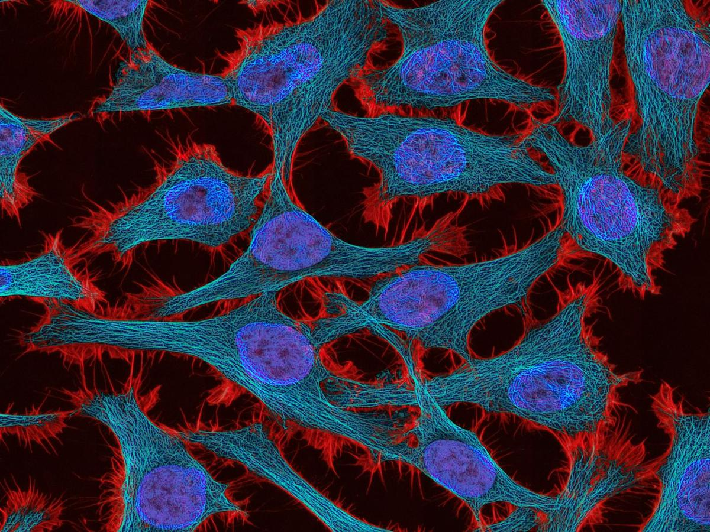

Bulk RNA-seq analysis to identify tumour-enriched, tumour-intrinsic and immune-induced genes

Challenge: The client had performed bulk transcriptomic profiling of purified patient tumours and patient-derived model systems to characterise the influence of microenvironment on tumour cell properties. Control samples had not been included in the experimental set-up, therefore, a classic comparison between patient and normal samples could not be performed (which would identify a set of tumour-enriched genes). As the goal was to identify the cell surface tumour intrinsic genes as well as immune-induced genes, identification of the tumour-enriched genes was a critical first step.
Solution: A set of control samples were curated from GTEx, matching the tumour tissue sampled. To account for the separate normal dataset (which made batch effect adjustment difficult), a stringent cut-off was used for identifying differentially expressed genes. Annotation of cell surface proteins was performed and results filtered to produce a set of tumour enriched cell surface genes. This set of genes was then stratified into three sets depending on whether the expression was i) higher in the patient versus model system (immune-induced set), ii) lower in the patient versus the model system or iii) not significantly different between patient and model system samples (tumour intrinsic set).
Impact: Cell surface tumour intrinsic genes were identified which had not been previously identified, providing the customer with the discovery of new potential therapeutic targets.